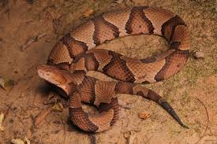

This is an animal that has been found at Overton Park. If you walk here, there is a chance you will see one. Many people have seen this type of snake while visiting the park as it is somewhat common. The snake loves wooded areas, especially with a small water source. They may often be found near the water. There are several other species of snake that live in the park, including the corn snake which looks similar to the copperhead although non-venomous and harmless. There are also a handfull of different types of forest birds, foxes, and coyotes that are occasionally seen in and around the park. The park is in midtown and within close proximity to Crosstown, so it is very convenient for those living in the heart of Memphis city limits.
COPPERHEAD